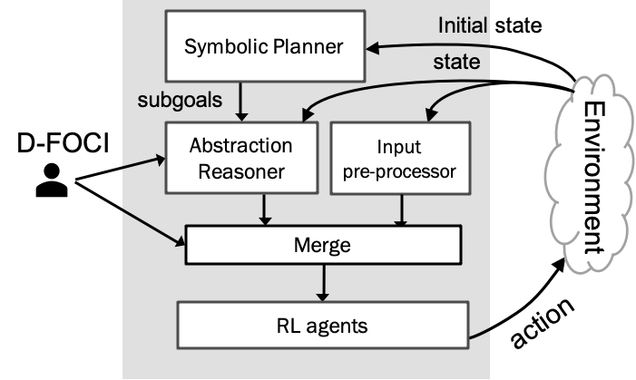

Hybrid Deep RePReL
Harsha Kokel, Nikhilesh Prabhakar, Balaraman Ravindran, Eric Blasch, Prasad Tadepalli, Sriraam Natarajan · FUSION 2022
Fusing high-level symbolic reasoning with lower-level signal-based reasoning has become a central question as deep learning has advanced. We previously developed RePReL, combining a higher-order symbolic planner with a signal-based RL system to construct abstractions that accelerate learning in structured domains — those with many interacting objects that don't compress well into a fixed-length vector. RL in structured domains is inherently hard, and only a small number of solutions exist. RePReL takes a first step by using the planner to define a smaller abstract state-action space for efficient learning by the lower-level RL agent; its key strength is generalizing to a varying number of objects.
RePReL
The RePReL architecture stacks three modules: a Symbolic Planner, an Abstraction Reasoner, and RL agents.

RePReL Architecture
- Symbolic Planner. Uses the high-level planning domain description to decompose the goal into a sequence of temporally extended actions, decomposing the GRMDP into small sub-goal RMDPs.
- Abstraction Reasoner. Generates a task-specific abstract state representation using dynamic first-order conditional influence statements provided by a domain expert.
- RL Agents. Multiple reinforcement learners at the lowest level learn separate policies for each option in the abstract state space.
While RePReL was successful, it assumed underlying features are discrete and homogeneous — restricting it from exploiting deep RL's power, and from scenarios where data arrives from multiple sources. This work extends the RePReL architecture to adapt to hybrid data: a conglomeration of many varied data types from different sources.
Hybrid Deep RePReL
Hybrid Deep RePReL introduces two additional modules to handle the combination of structured and unstructured information: an input preprocessing module and a merge module.

Hybrid Deep RePReL Architecture
The unstructured part of the state space passes through the input pre-processing module, generating latent state embeddings — this can be a Convolutional Neural Network for image data, a transformer for text data, or a combination of both. The relevant state variables from the abstraction reasoner and the latent predicates from the input preprocessing module are combined by the merge module and provided to the deep RL agents for learning.
Implementation is available on our lab's GitHub: github.com/starling-lab/DeepRePReL.
Citation
@inproceedings{KokelPRBTN22,
title={Hybrid Deep RePReL: Integrating Relational Planning and Reinforcement Learning for Information Fusion},
author={Harsha Kokel and Nikhilesh Prabhakar and Balaraman Ravindran and Eric Blasch and Prasad Tadepalli and Sriraam Natarajan},
booktitle={IEEE 25th International Conference on Information Fusion (FUSION)},
year={2022}
}
Acknowledgements
HK, NP, and SN gratefully acknowledge the support of ARO award W911NF2010224 and AFOSR award FA9550-18-1-0462. PT acknowledges support of DARPA contract N66001-17-2-4030 and NSF & USDA-NIFA under grant 2021-67021-35344. The views and conclusions contained herein are those of the authors and should not be interpreted as necessarily representing the official policies or endorsements, either expressed or implied, of AFOSR, ARO, NSF, DARPA, or the U.S. government.